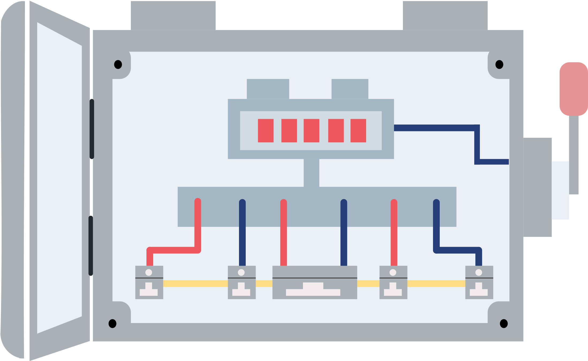

-
Gas Leaks. Shut off the main gas valve only if you suspect a leak because of broken pipes, the
odor or sound of leaking natural gas, or you see the meter spinning quickly.
-
Damaged Electrical Wiring. Shut off power at the main breaker switch if there is any damage
to your house wiring. Leave the power off until the damage is repaired.
-
Broken Lights and Appliances. Unplug these as they could start fires when electricity is restored.
-
Downed Power Lines. Never touch downed power lines or any objects in contact with them.
-
Fallen Items. Beware of items tumbling off shelves when you open the doors of closets and cupboards.
-
Spills. Use extreme caution. Clean up any spilled medicines, drugs, or other non-toxic substances.
-
Damaged Masonry. Stay away from chimneys and walls made of brick or block.